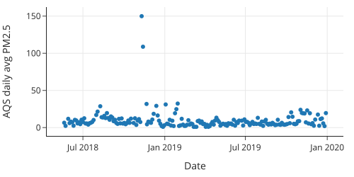
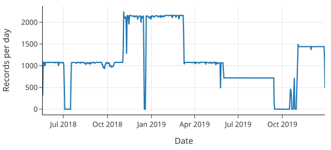
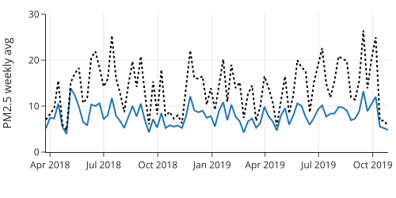
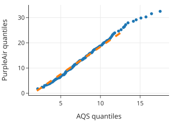
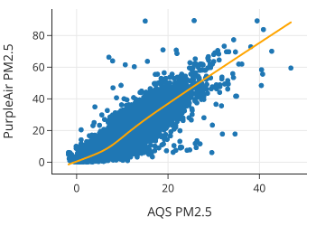

08. 案例研究：空气质量测量的准确性
本章将通过一个完整的案例研究——校准空气质量传感器数据，来回顾和综合应用前面（01-07章）所学的数据科学知识。
背景
加利福尼亚州经常遭受野火的侵袭，导致空气质量急剧下降。居民需要根据空气质量决定是否通过佩戴口罩、使用空气过滤器或减少外出来进行防护。
在通过数据解决问题之前，我们首先需要了解可用的数据源及其特点。
数据源对比
在本案例中，我们将对比两种主要的空气质量数据源：
| 特性 | AQS (空气质量系统) | PurpleAir |
|---|---|---|
| 运营方 | 美国政府 (EPA) | 私人/社区 (众包) |
| 精度 | 黄金标准 (Gold Standard)，严格校准 | 较低，使用简易计数方法，倾向于高估污染程度 |
| 成本 | 昂贵 ($15,000 - $40,000) | 便宜 (~$250) |
| 密度 | 稀疏，站点少 | 密集，成千上万个家庭安装 |
| 时效性 | 滞后 1-2 小时 (经过校准处理) | 实时 (每2分钟更新) |
| 总结 | 准确但不及时 | 及时但不准确 |
目标与流程
目标：利用高精度的 AQS 数据来校准和改进及时性好的 PurpleAir 数据。
这项工作遵循 Karoline Barkjohn 等人（美国环保署）的研究思路。目前，美国政府的官方地图（如 AirNow Fire and Smoke map）已经采用了这种校准方法。
我们将按照数据科学生命周期进行操作，这也是对全书内容的实战复习：
- 问题与范围 (Question & Scope)：确立利用 AQS 校准 PurpleAir 的目标。
- 数据清洗与整理 (Cleaning & Wrangling)：这是最耗时的部分，需要处理脏数据、格式转换等。
- 探索性数据分析 (EDA)：通过可视化理解数据特征。
- 建模 (Modeling)：建立数学模型进行修正，以提高泛化能力。
接下来，我们将从数据的获取和设计范围开始。
1. 问题、设计与范围 (Question, Design, and Scope)
1.1 问题提出
理想的空气质量监测应兼顾准确性与时效性： * 不准确：偏差的测量可能导致人们忽视风险或甚至产生不必要的恐慌。 * 不及时：滞后的警报会让人们暴露在有害空气中。
我们的核心问题是：能否利用 AQS 的高质量数据来改进 PurpleAir 传感器的测量结果？
1.2 数据范围与设计思路
我们拥有：
- 少量的 AQS 数据（可视为 Ground Truth，由于其误差极小且无明显偏差）。
- 海量的 PurpleAir 数据（可获取成千上万个传感器，但存在偏差和较大的变异性）。
设计思路：
- 配对 (Pairing)：基于地理位置，寻找距离相近的 AQS 和 PurpleAir 传感器对。假设它们测量的是相同的空气样本。
- 建模 (Modeling)：以 AQS 数据为基准，研究 PurpleAir 测量的变化规律。
- 泛化 (Generalization)：如果我们发现了简单的数学关系（如线性关系），就可以将此模型应用于所有其他的 PurpleAir 传感器，修正其读数，使其更接近真实值。
这是一个典型的结合大小数据集的案例：利用少量精准数据（AQS）去校准大量粗糙数据（PurpleAir），从而放大整个网络的效用。这就好比利用基准仪器去校准全城的温度计。
接下来的章节，我们将开始数据整理工作，重点关注 PM2.5（直径小于 2.5 微米的颗粒物），这是对健康危害最大且随木柴烟雾最为常见的污染物。
2. 寻找共址传感器 (Finding Collocated Sensors)
我们的第一步是找到位置几乎重合（Collocated）的 AQS 和 PurpleAir 传感器。
- 目的：控制变量。如果两个传感器紧挨着（例如在公园里），它们接触到的空气样本应极其相似。任何读数差异都可归因于传感器本身的构造或微小的局部波动，排除了环境差异（如一个在公园，一个在高速路旁）的干扰。
- 标准：参照 Barkjohn (EPA) 的研究，我们寻找距离在 50米 以内的传感器对。
2.1 整理 AQS 站点数据 (Wrangling the List of AQS Sites)
- 加载数据：读取
list_of_aqs_sites.csv。 - 检查粒度 (Granularity)：
- 发现
AQS_Site_ID有重复，说明每行代表一个仪器（Instrument）而非站点（Site）。一个站点可能有多个测量 PM2.5 的仪器。 - 处理：我们只关心站点位置，因此按
AQS_Site_ID分组并取第一行，将粒度调整为站点级别。
- 发现
- 筛选列：仅保留
site_id,lat(纬度),lon(经度)。
# 代码逻辑示意
aqs_sites = (aqs_sites_full
.pipe(rollup_dup_sites) # 按站点ID去重
.pipe(cols_aqs)) # 只保留ID和经纬度
2.2 整理 PurpleAir 站点数据 (Wrangling the List of PurpleAir Sites)
- 加载数据：读取
list_of_purpleair_sensors.json。- 这是一个 JSON 文件，包含
fields(列名) 和data(数据值)。需要解析 JSON 并转换为 DataFrame。
- 这是一个 JSON 文件，包含
- 检查粒度：
- 检查
ID列，发现无重复值。确认粒度为单个传感器。
- 检查
- 筛选列：保留
id,label,lat,lon。
# 代码逻辑示意
pa_sites = pd.DataFrame(pa_json['data'], columns=pa_json['fields'])
pa_sites = pa_sites.pipe(cols_pa) # 只保留必要列
2.3 匹配传感器 (Matching AQS and PurpleAir Sensors)
我们需要找出距离小于 50 米的传感器对。仅靠 pandas 的 merge 很难直接实现“范围匹配”。
- 地理距离近似：我们使用简化的经纬度换算：
- 纬度 1 度 \(\approx\) 111,111 米。
- 经度 1 度 \(\approx\) \(111,111 \times \cos(\text{latitude})\) 米。
- 据此计算出 25 米对应的经纬度偏移量 (
offset_in_lat,offset_in_lon)，构建一个 50x50 米的矩形搜索框。
- SQL 查询：
- 利用 SQL 的非等值连接（Non-equi Join）功能，比 pandas 更高效地处理范围匹配。
- 将 DataFrames 存入临时 SQLite 数据库，执行 JOIN 查询。
SELECT
aqs.site_id, pa.id, ...
FROM aqs JOIN pa
ON pa.lat - offset <= aqs.lat AND aqs.lat <= pa.lat + offset
AND pa.lon - offset <= aqs.lon AND aqs.lon <= pa.lon + offset
结果：成功匹配到了 149 对共址传感器。接下来，我们将深入清洗和分析这些传感器的具体测量数据。
3. 清洗 AQS 传感器数据 (Wrangling and Cleaning AQS Sensor Data)
在确定了共址传感器后，我们选取了位于加州萨克拉门托的一对传感器进行分析：
- AQS ID:
06-067-0010 - PurpleAir Name:
AMTS_TESTINGA - 时间范围: 2018.05.20 - 2019.12.29
本节主要展示如何清洗 AQS 的日均 PM2.5 数据。
3.1 检查粒度与去重 (Checking Granularity)
我们加载数据后发现，每个日期有 12 条记录。
- 原因：AQS 数据包含根据不同标准或事件类型计算的多个测量值。
- 检查：计算每天 12 条记录的极差 (
max - min)，发现全为 0。这意味着所有记录的数值是相同的。 - 处理：直接取每天的第一条记录，确保粒度为每日一条。
# 代码逻辑：按日期分组取第一条
def rollup_dates(df):
return df.groupby('date_local').first().reset_index()
3.2 移除无关列 (Removing Unneeded Columns)
原始数据有 31 列，我们只需要日期和 PM2.5 测量值。
- 保留
date_local和arithmetic_mean。 - 将
arithmetic_mean重命名为pm25，便于理解。
3.3 检查日期的有效性 (Checking the Validty of Dates)
- 解析日期：使用
pd.to_datetime将字符串类型的日期转换为时间戳对象。 - 检查缺失：通过计算最大日期与最小日期的差值，发现实际记录数少于理论天数，说明存在数据缺失（Gap）。但在后续建模中，只要有足够的数据点即可。
3.4 检查 PM2.5 数值质量 (Checking the Quality of Measurements)
PM2.5 单位为 \(\mu g/m^3\)。我们要检查数据是否合理：
- 非负性：数值不能低于 0。
- 异常值 (Outliers)：结合实际情况判断高值是否合理。

- 观察：数据均大于0。
- 验证：图表中 2018 年 11 月出现了一个巨大的峰值。经查证，这与当时加州历史上最具破坏性的 Camp Fire 山火时间吻合（起火点距萨克拉门托仅 80 英里）。这说明传感器准确记录了真实的极端空气污染事件。
4. 处理和清理 PurpleAir 传感器数据 (Wrangling PurpleAir Sensor Data)
与 AQS 数据不同，PurpleAir 数据包含两个独立的测量仪器（A 和 B），每个仪器又分为主要（Primary）和次要（Secondary）数据。
4.1 数据载入与筛选 (Data Loading and Selection)
- 文件识别：每个传感器对应 4 个 CSV 文件（仪器 A 的 Primary/Secondary，仪器 B 的 Primary/Secondary）。
- 目标数据：我们只关注 Primary 数据（包含 PM2.5、温度、湿度）。
- 列选择：PurpleAir 提供
CF1和ATM两种转换算法。根据 Barkjohn 的研究，PM2.5_CF1_ug/m3更准确，因此保留该列。
4.2 检查数据粒度 (Checking the Granularity)
为了与 AQS 数据匹配，我们需要将两分钟一次的读数聚合为日均值。
- 时区转换：PurpleAir 使用 UTC 时间，必须转换为
US/Pacific以匹配 AQS 的本地时间（需处理夏令时）。 - 采样率变化：
- 2019年5月30日之前：每80秒一次（理论每日 1080 个点）。
- 2019年5月30日之后：每120秒一次（理论每日 720 个点）。
- 可视化检查：通过绘制每日记录数折线图，可以清晰看到数据缺失（Gaps）和采样率变化导致的台阶状分布。

4.3 数据清洗逻辑 (Data Cleaning Pipeline)
- 去重：发现同一时间戳有重复记录，直接剔除。
- 处理缺失值：
- 完整性阈值：仅保留由于设备故障或网络问题导致数据丢失较少的日期。
- 标准：如果当天记录数少于理论值的 90%，则视为无效天，不计算日均值。
- 计算日均值：对满足条件的日期计算 PM2.5 平均值。
4.4 仪器一致性检查 (Instrument Consistency)
PurpleAir 的双仪器设计（A/B）可以用于质量控制：
- 对仪器 B 重复上述清洗流程。
- 对比 A 和 B：如果两者的日均 PM2.5 差异过大（根据 Barkjohn 标准：差异 > 61% 或 > 5 \(\mu g/m^3\)），则认为该数据不可靠并将其移除。
- 最终得到高置信度的日均 PM2.5 数据集。
5. 探索 PurpleAir 与 AQS 测量值的关系 (Exploring Data)
在进行建模之前，我们需要探索清洗后的匹配数据集，重点关注两种传感器测量值之间的关系。
数据集概览：
- pm25aqs：AQS 传感器的 PM2.5 测量值（基准值）。
- pm25pa：PurpleAir 传感器的 PM2.5 测量值（待校准值）。
- 其他变量：日期、站点ID、区域、温度、湿度、露点。
5.1 单站点分析 (Single Site Analysis)
选取数据量较大的站点（如 NC4）进行可视化分析：
-
时间序列图：
- 通过周平均值的折线图可以看出，PurpleAir 的读数趋势与 AQS 高度一致（同升同降）。
- 但 PurpleAir 的读数始终高于 AQS，表明需要进行校正。

-
分布对比：
- 两者的分布都呈右偏（受 0 值的下限限制）。
- Q-Q 图（Quantile-Quantile Plot） 显示两者关系大致为线性，但 PurpleAir 的分布扩散程度（Spread）约为 AQS 的 2.2 倍。
- 差异分布：计算
PurpleAir - AQS的差值，发现 90% 的情况下 PurpleAir 读数更高。

5.2 全局关系分析 (Global Relationship Analysis)
将所有站点的数据汇总进行散点图分析：
- 线性关系：尽管存在过高估计，但 PM2.5 AQS 与 PM2.5 PA 之间存在极强的线性相关性（相关系数 ~0.88）。
- 低值弯曲：在空气非常洁净（AQS < 50）的区间，曲线有轻微弯曲，但整体趋势通过原点 (0,0)。
- 结论：PurpleAir 虽然系统性地高估了 PM2.5，但这种偏差是规律性的，这为通过数学模型进行校准提供了坚实基础。

6. 建立校正模型 (Creating a Model)
既然已经确认了 PurpleAir 和 AQS 读数之间的关系，最后一步就是建立模型来校正 PurpleAir 的测量值。
6.1 建模目标与方法 (Modeling Goals and Approach)
- 目标：利用 PurpleAir (PA) 的测量值尽可能准确地预测真实的 PM2.5 值 (AQS)。
- 方法（校准 Calibration）：
- 正向拟合：以 AQS 为基准（作为自变量 \(X\)），拟合 PurpleAir 的读数（作为因变量 \(Y\)）。这是因为 AQS 被认为是精确的“真值”，且误差极小。
- 反向预测：得到模型 \(PA = f(AQS)\) 后，通过反函数 \(AQS = f^{-1}(PA)\) 来根据 PurpleAir 的读数推算真实空气质量。
为什么不直接用 PA 预测 AQS？ 线性回归通常假设 \(X\) 轴测量无误差，通过最小化 \(Y\) 轴方向的误差来拟合。因此，我们将精确的 AQS 放在 \(X\) 轴作为校准曲线，然后反转用于预测。这类似于校准天平：用已知重量的砝码（AQS）去测试天平的读数（PurpleAir），得出偏差规律后再反向修正未来的读数。
6.2 简单线性模型 (Simple Linear Model)
我们使用最小二乘法（Least Squares）拟合线性模型，最小化平均平方误差（MSE）： \(PA \approx m \times AQS + b\)
使用 scikit-learn 拟合数据后，反转公式得到估计值：
\(\text{True Air Quality} \approx 0.53 \times PA + 1.4\)
这与我们在 EDA 阶段的观察一致：PurpleAir 的读数大约是 AQS 的两倍，因此修正系数约为 0.5。
6.3 多元线性模型 (Multivariable Linear Model)
Barkjohn 最终采用的模型还引入了 相对湿度 (RH) 作为变量，因为湿度会影响传感器的读数：
\(PA \approx m_1 \times AQS + m_2 \times RH + b\)
拟合并反转后的校准公式为： \(\text{True Air Quality} \approx 0.53 \times PA - 0.088 \times RH + 5.7\)
该模型引入了湿度修正，相比简单线性模型能提供更准确的 PM2.5 估算值。关于如何比较和评估这两种模型的优劣，我们将在后续章节详细讨论。
7. 总结 (Summary)
在本章中，我们复现了 Barkjohn 的分析工作，建立了一个模型来校正 PurpleAir 的测量值，使其与 AQS 的测量值高度一致。这一模型的准确性使得 PurpleAir 传感器得以被纳入美国官方的 AirNow 火灾与烟雾地图中，为公众提供了及时且准确的空气质量信息。
我们展示了如何利用精确、维护严格的政府监测设备数据来提升众包开放数据的质量。在此过程中，重点在于清理和合并来自多个来源的数据，并拟合模型以调整和改进空气质量测量。
本案例研究应用了本书前面章节涵盖的许多概念：
- 文件与数据整理 (Wrangling)：这是数据科学中庞大且重要的一部分。利用此前章节的粒度概念，我们将两个来源的数据整理成可分析的结构，实现了邻近空气质量传感器的匹配。
- 数据清洗 (Cleaning)：利用此前章节中的时间数据处理概念，我们发现并修正了诸如缺失数据点和重复数据值等众多问题，确保了数据在两个来源间的兼容性及其在分析中的可信度。
- 探索性数据分析 (EDA)：尽管建模看似是数据科学中最令人兴奋的部分，但深入了解和信任数据至关重要，且往往能为建模阶段带来重要洞见。
接下来，我们将进入本书的后续部分，重点讨论 建模 (Modeling) 相关主题。但在那之前，我们将先介绍两个与数据整理相关的主题：如何从文本中提取可分析数据（下一章），以及其他源文件格式（再下一章）。
恭喜你完成了这一部分的学习！你所掌握的原理和技术几乎适用于所有类型的数据分析，现在你可以开始将它们应用到自己的分析项目中了。